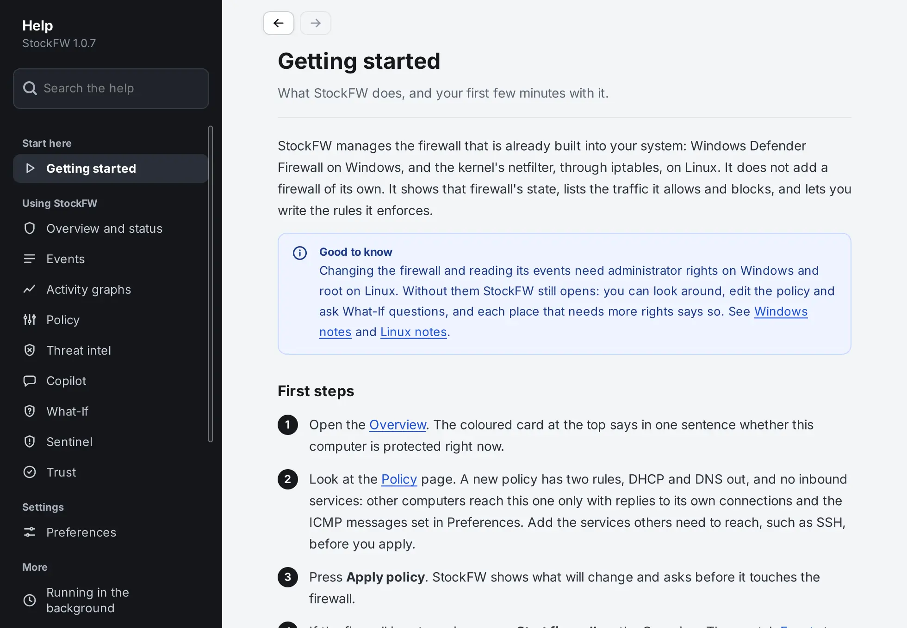
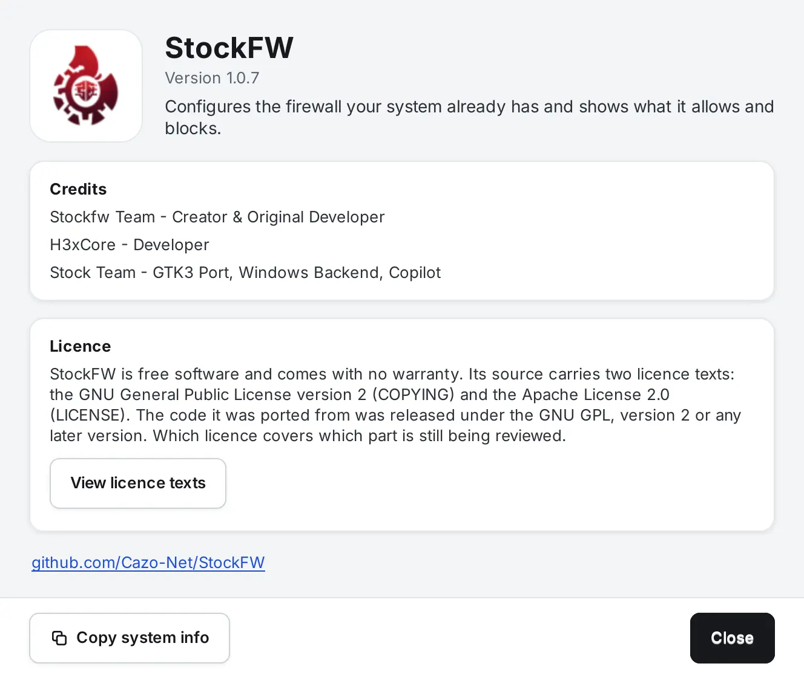

Help and About
StockFW carries its own help. It is a window, not a web page: every topic is compiled into the program, nothing is fetched, and it works on a computer with no Internet connection. This site covers the same ground at more length; the Help window is what you reach for while the app is in front of you.
The Help window#

Open it with F1 from any page of the main window and it lands on the topic for that page. The Help item at the bottom of the sidebar, the Help button and F1 in Preferences (the topic for the settings page shown), and Help in the tray menu (the topic on running in the background) open the same window.
- Topics: Getting started; Overview and status, Events, Activity graphs, Policy, Threat intel, Copilot, What-If, Sentinel and Trust; Preferences with one topic per settings page; Running in the background; Command line and dashboard; Linux notes and Windows notes; Troubleshooting, Keyboard shortcuts, and About and credits.
- Search looks through titles, summaries, text and extra keywords, and Enter opens the first topic found.
- Back and Forward, also Alt+Left and Alt+Right, keep a history as you follow links between topics. A link to anything outside the help opens in your browser.
- There is one Help window. It is not modal: it takes input while Preferences is open, stays open when Preferences closes, and from the tray it opens on its own with the main window left hidden.
The help describes the build in front of you. It is checked against the program: a smoke test opens every topic, follows every link, searches, walks Back and Forward, presses F1 on every page including Threat Intel, and reads the sentences the release reviews corrected, so the help cannot drift from the code without a test failing. Verified fs-help-smoke
Keyboard shortcuts#
| Where | Keys | What they do |
|---|---|---|
| Main window | F1 | Help for the page you are on |
| Ctrl+, | Preferences | |
| Ctrl+Q | Quit StockFW | |
| Alt+A | Policy: apply the policy | |
| Alt+C | Events: clear the list | |
| Alt+F | Events: read recent events again | |
| Left Right Home End | Activity: read one interval of the graph at a time | |
| Enter | Trust: inspect the path you typed | |
| Preferences | F1 | Help for the page shown |
| Escape | Cancel and close | |
| Help | Ctrl+F | Search the help |
| Escape | Clear the search | |
| Enter | Open the first topic found | |
| Alt+Left, Alt+Right | Back, Forward | |
| Ctrl+W | Close Help | |
| About | Escape | Close it |
About#

About StockFW at the bottom of the sidebar shows the version, the credits and a licence summary that is true to the source: the tree carries the GNU General Public License version 2 (COPYING) and the Apache License 2.0 (LICENSE), the code it was ported from was released under the GPL version 2 or any later version, and which licence covers which part is still under review. View licence texts shows both texts, compiled into the program. The installers ship the same summary followed by both texts, and a test reads the staged file back. Verified test-licence-texts.sh
Every topic of this window is also printed by stockfw help topics and stockfw help TOPIC, and installed as the manual page stockfw-topics(7); stockfw about is the About window in text. Verified test-help-text.c
Copy system info puts the StockFW and GTK versions, the platform and the firewall backend on the clipboard, for a bug report. It copies nothing about you: no user name, host name or home folder. The About window is not modal and there is one at a time.